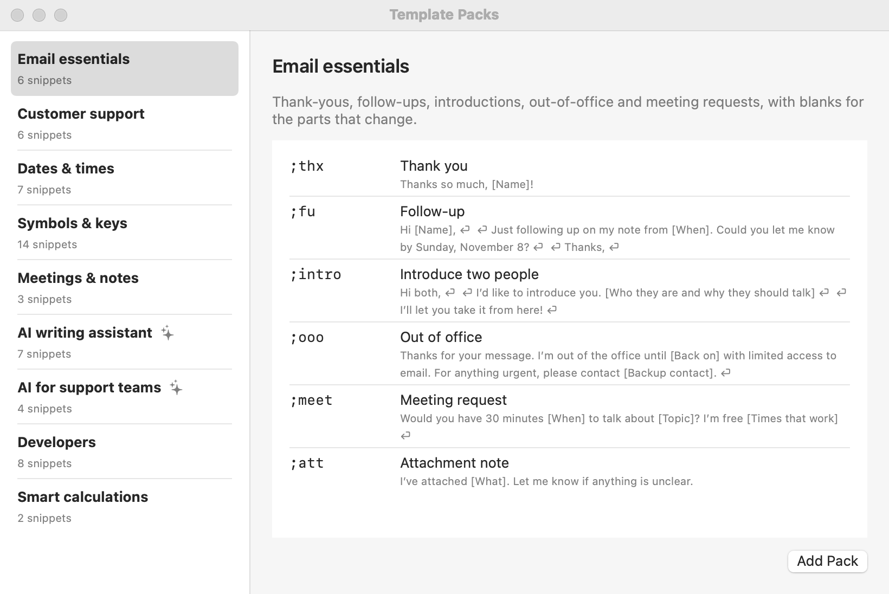

Template Packs
Ready-made groups of snippets you can add in one click: email, support, dates, symbols, meetings, AI writing, developers, and more.
To add a pack
- Choose File ▸ Template Packs…, or click + below the group list and choose Template Packs….
- Pick a pack on the left. The right side lists its snippets and what each one types.
- Click Add Pack. The pack becomes a new group in your library, selected and ready to use.

- Abbreviations you already use aren’t replaced. The pack’s copy gets a number instead (
;thxbecomes;thx1), and Shorthand tells you which ones. - It’s your copy. Edit, rename, move, or delete the snippets like any others. Adding a pack again adds a second copy.
- Undo with ⌘Z, or move the group to the Trash.
AI packs: copy some text, then type the abbreviation. AI writes the result where you’re typing. These need an AI provider; see Setting Up AI.
The packs
Email essentials
Thank-yous, follow-ups, introductions, out-of-office notes, and meeting requests, with blanks for the parts that change.
| Type | What it does |
|---|---|
;thx | Thank you |
;fu | Follow-up |
;intro | Introduce two people |
;ooo | Out of office |
;meet | Meeting request |
;att | Attachment note |
Customer support
Friendly, consistent replies for help desks: greetings, order numbers, refunds, updates, escalations, and closing a ticket.
| Type | What it does |
|---|---|
;hi | Greeting |
;order | Ask for the order number |
;refund | Refund issued |
;eta | Update coming |
;esc | Escalated |
;close | Closing the ticket |
Dates & times
Today, tomorrow, next week, and timestamps in the formats people actually use.
| Type | What it does |
|---|---|
;td | Today, long |
;iso | Today, ISO |
;now | Time now |
;stamp | Timestamp |
;tmrw | Tomorrow |
;nw | A week from today |
;due | Due in 30 days |
Symbols & keys
Mac key symbols, arrows, marks, and a couple of classics you can never find when you need them.
| Type | What it does |
|---|---|
;cmd | Command key |
;opt | Option key |
;ctrl | Control key |
;shift | Shift key |
;ret | Return key |
;arr | Arrow |
;check | Check mark |
;cross | Cross mark |
;deg | Degree |
;tm | Trademark |
;copy | Copyright |
;em | Em dash |
;shrug | Shrug |
;flip | Table flip |
Meetings & notes
Agendas, meeting notes with action items, and a recap email with a next step and a date.
| Type | What it does |
|---|---|
;agenda | Agenda |
;notes | Meeting notes |
;recap | Recap email |
AI writing assistant Uses AI
Copy any text, type an abbreviation, and AI writes the result in place: summaries, fixes, rewrites, replies, and subject lines.
| Type | What it does |
|---|---|
;tldr | Summarize the clipboard |
;polish | Fix spelling and grammar |
;shorter | Make it shorter |
;kind | Make it kinder |
;reply | Draft a reply |
;subj | Subject line |
;bullets | Notes to bullets |
AI for support teams Uses AI
Copy a customer’s message and let AI draft an apology, an answer, or an explanation in your voice, ready to check and send.
| Type | What it does |
|---|---|
;sorry | Apology |
;answer | Answer the question |
;explain | Explain simply |
;tone | Calm an angry reply |
Developers
TODOs, logging, conventional commits, Markdown tables, and code fences, plus a fresh UUID from a script snippet.
| Type | What it does |
|---|---|
;todo | TODO comment |
;cl | console.log |
;pf | Python f-string print |
;cc | Conventional commit |
;fence | Code fence |
;mdt | Markdown table |
;uuid | New UUID |
;ip | This Mac’s local IP |
Smart calculations
Snippets that do the math: a tip, a quick quote with tax, and a discount that only appears when it applies.
| Type | What it does |
|---|---|
;tip | Tip calculator |
;quote | Quote with tax |